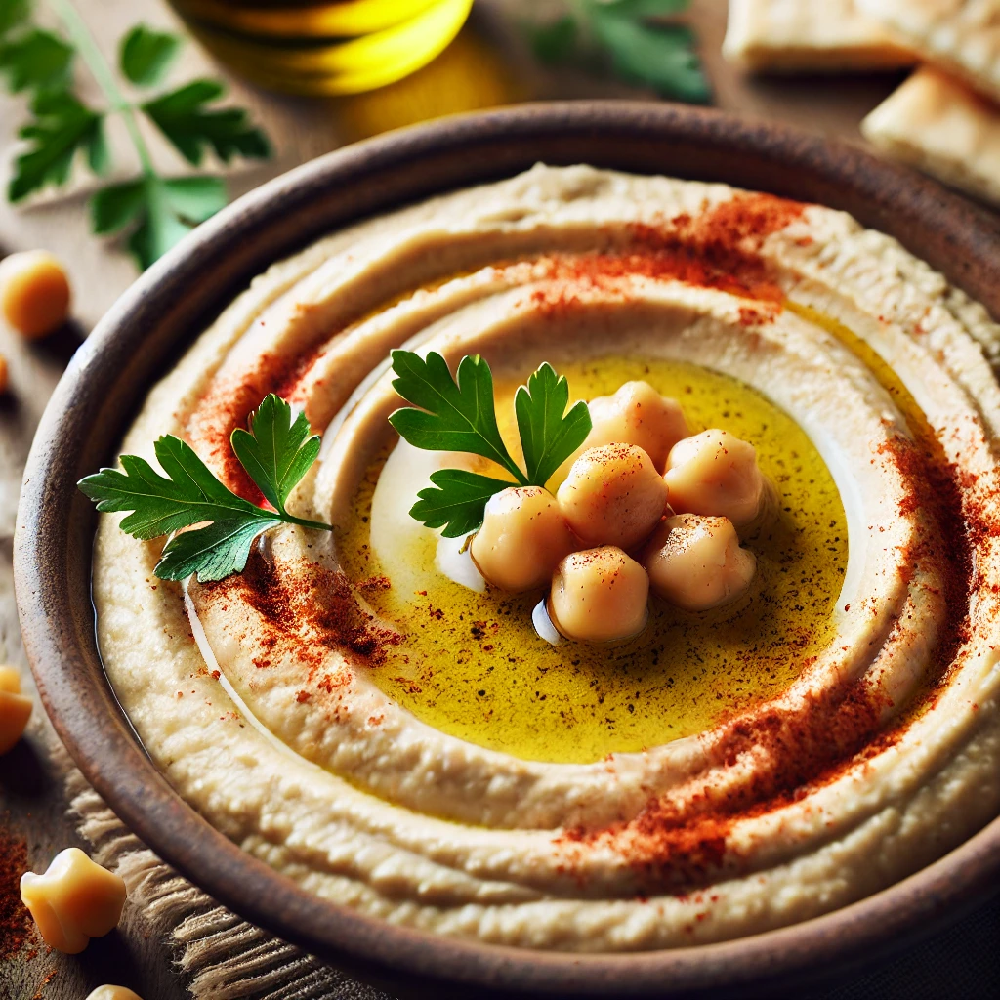

Classic Creamy Hummus
Description: A smooth and creamy homemade hummus recipe with pro tips for perfect texture, including skinned chickpeas and ice water.

Ingredients
- 2 3/4 cups canned chickpeas, skinned and drained (reserve liquid)
- 1/2 cup tahini
- 2-3 cloves garlic, peeled
- 1/4 cup fresh lemon juice
- 1/4 cup olive oil
- 1/2 teaspoon ground cumin
- 3/4 teaspoon salt
- 2-3 tablespoons reserved chickpea liquid or ice-cold water
Instructions
- Drain chickpeas and save 1/2 cup of the liquid. Skin the chickpeas for the smoothest hummus.
- In a food processor, blend chickpeas, tahini, garlic, and lemon juice for 1-2 minutes until smooth.
- With the processor running, drizzle in olive oil and reserved liquid (or ice water) until creamy.
- Add cumin and salt; blend. Adjust seasoning and consistency with more lemon juice or water.
- Serve hummus in a bowl, drizzle with olive oil, and garnish with paprika, parsley, or sesame seeds.
Notes
Pro Tip: Removing chickpea skins ensures extra smooth texture. Using ice water when blending helps emulsify the tahini and keeps the hummus light. Serve with pita, veggies, or as a spread!